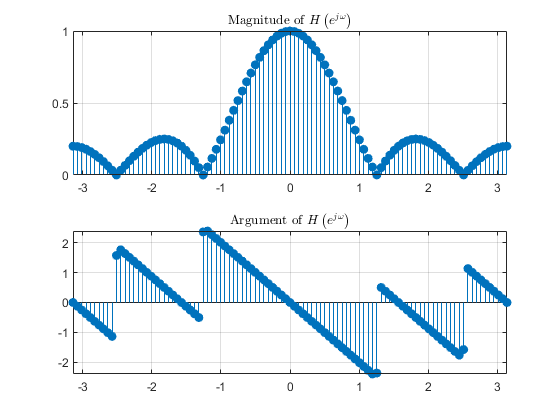
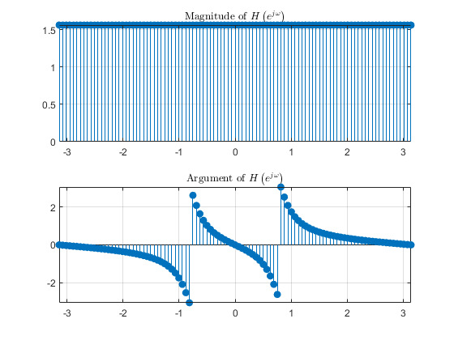
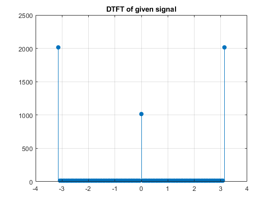
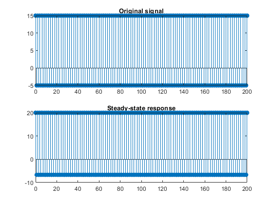
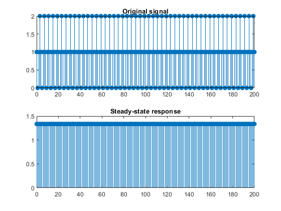
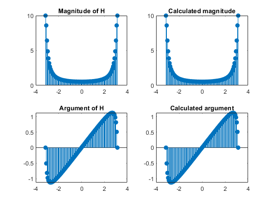
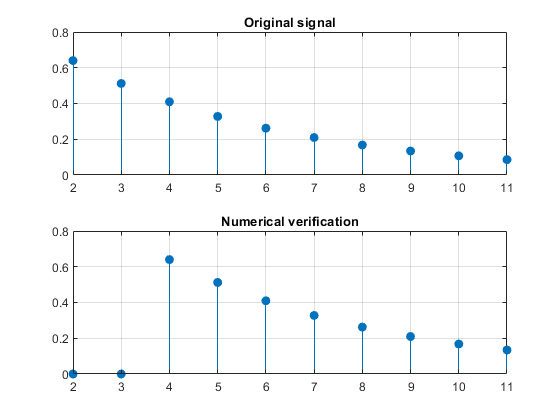
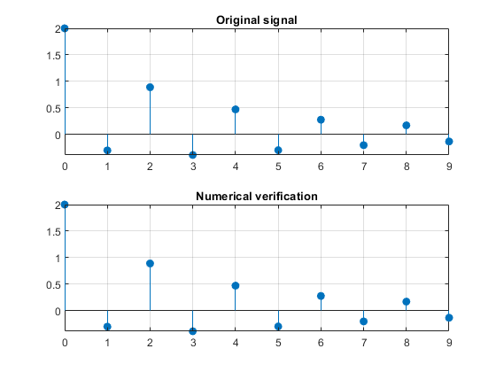
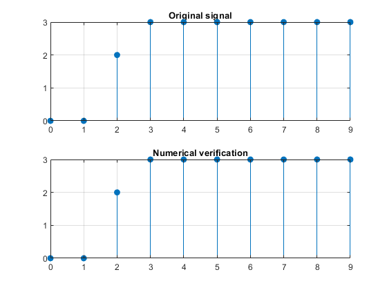
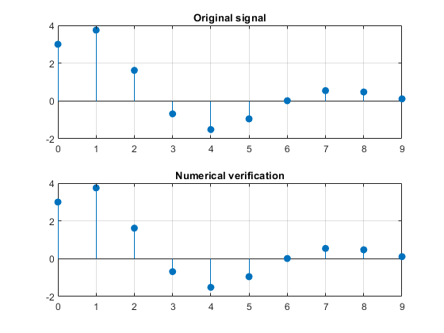

Contents
3.15
3.17
omega = linspace(-pi, pi, 101);
H = 0.2 * (1 + exp(-1i.*omega.*1) + exp(-1i.*omega.*2) + exp(-1i.*omega.*3) + exp(-1i.*omega.*4));
figure();
subplot(2, 1, 1); stem(omega, abs(H), 'filled');
title("Magnitude of $$H\left(e^{j\omega}\right)$$", 'interpreter', 'latex');
axis tight; grid on;
subplot(2, 1, 2); stem(omega, angle(H), 'filled');
title("Argument of $$H\left(e^{j\omega}\right)$$", 'interpreter', 'latex');
axis tight; grid on;
H = (1 - 1.7678*exp(-1i.*omega) + 1.5625*exp(-2i*omega))./(1 - 1.1314*exp(-1i.*omega) + 0.64*exp(-2i.*omega));
figure();
subplot(2, 1, 1); stem(omega, abs(H), 'filled');
title("Magnitude of $$H\left(e^{j\omega}\right)$$", 'interpreter', 'latex');
axis tight; grid on;
subplot(2, 1, 2); stem(omega, angle(H), 'filled');
title("Argument of $$H\left(e^{j\omega}\right)$$", 'interpreter', 'latex');
axis tight; grid on;
 
3.18
omega = linspace(-pi, pi, 101); n = 0:200;
H = @(omega) (1 + exp(-2i.*omega) + exp(-4i.*omega) + exp(-6i.*omega))./(1 + 0.81*exp(-2i.*omega) + 0.81^2*exp(-4i.*omega) + 0.81^3*exp(-6i.*omega));
x = 5 + 10.*(-1).^n;
figure();
stem(omega, abs(numerical_dtft_2(x, n, omega)), 'filled'); grid on;
title("DTFT of given signal");
y = 5 * abs(H(0)) * cos(angle(H(0))) + 10 * abs(H(pi)) * cos(pi.*n + angle(H(pi)));
figure();
subplot(2, 1, 2); stem(n, y, 'filled');
title("Steady-state response");
subplot(2, 1, 1); stem(n, x, 'filled');
title("Original signal");
x = 1 + cos(0.5*pi.*n + pi/2);
y = abs(H(0)) * cos(angle(H(0))) + abs(H(0.5*pi))*cos(0.5*pi.*n + pi/2 + angle(H(0.5*pi)));
figure();
subplot(2, 1, 2); stem(n, y, 'filled');
title("Steady-state response");
subplot(2, 1, 1); stem(n, x, 'filled');
title("Original signal");
  
3.20
omega = linspace(-pi, pi, 101);
H = 1./(1 + 0.9*exp(-1i.*omega));
arg = @(omega) atan((0.9*sin(omega))./(1 + 0.9*cos(omega)));
mag = @(omega) sqrt( 1./(1.81 + 1.8*cos(omega)) );
figure();
subplot(2, 2, 1); stem(omega, abs(H), 'filled');
title("Magnitude of H");
subplot(2, 2, 2); stem(omega, mag(omega), 'filled');
title("Calculated magnitude");
subplot(2, 2, 3); stem(omega, angle(H), 'filled');
title("Argument of H");
subplot(2, 2, 4); stem(omega, arg(omega), 'filled');
title("Calculated argument");

4.1
n = (0:9) + 2; x = 0.8.^n;
doublecheck = filter([0, 0, 0.8^2], [1, -0.8], n == n(1));
figure();
subplot(2, 1, 1); stem(n, x, 'filled');
grid on; title("Original signal");
subplot(2, 1, 2); stem(n, doublecheck, 'filled');
grid on; title("Numerical verification");
n = 0:9; x = 0.5.^n + (-0.8).^n;
doublecheck = filter(1, [1 -0.5], n == n(1)) + filter(1, [1 0.8], n == n(1));
figure();
subplot(2, 1, 1); stem(n, x, 'filled');
grid on; title("Original signal");
subplot(2, 1, 2); stem(n, doublecheck, 'filled');
grid on; title("Numerical verification");
 
4.3
n = 0:9; x = [0 0 2 3 3 3 3 3 3 3];
doublecheck = filter([0 0 2 1], [1 -1], n == n(1));
figure();
subplot(2, 1, 1); stem(n, x, 'filled');
grid on; title("Original signal");
subplot(2, 1, 2); stem(n, doublecheck, 'filled');
grid on; title("Numerical verification");
n = 0:9; x = 3 * 0.75.^n .* cos(0.3*pi*n) + 4 * 0.75.^n .* sin(0.3 * pi * n);
doublecheck = filter([3, 3*sin(0.3*pi) - 2.25*cos(0.3*pi)], [1, -1.5*cos(0.3*pi), 0.5625], n == n(1));
figure();
subplot(2, 1, 1); stem(n, x, 'filled');
grid on; title("Original signal");
subplot(2, 1, 2); stem(n, doublecheck, 'filled');
grid on; title("Numerical verification");
 